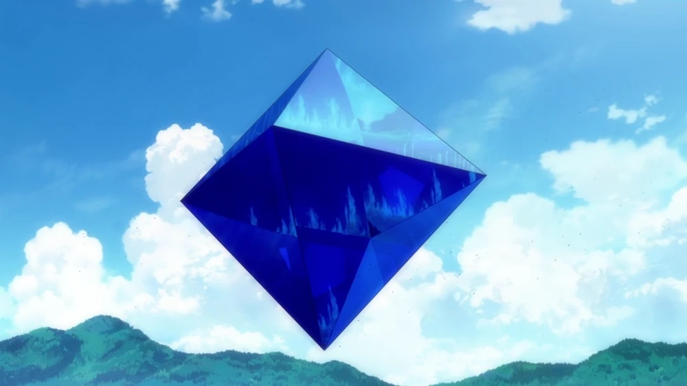

Los Ángeles: Enemigos Misteriosos
Los Ángeles son seres misteriosos que aparecen en Neon Genesis Evangelion como los principales antagonistas. Estos seres gigantescos atacan la ciudad de Tokyo-3 con el objetivo de alcanzar el GeoFront y entrar en contacto con Adán o Lilith.
Cada Ángel es único en su forma y habilidades. Algunos tienen formas humanoides, mientras que otros adoptan formas completamente abstractas o geométricas. Lo que todos comparten es su campo AT (Absolute Terror), una barrera de energía que los protege de la mayoría de los ataques convencionales.
Los Ángeles están numerados según el orden de aparición, desde el Ángel Tercero (Sachiel) hasta el Ángel Decimoctavo (Tabris). Cada uno presenta desafíos únicos que requieren estrategias diferentes para ser derrotados.
El origen de los Ángeles está relacionado con el Segundo Impacto y los planes secretos de SEELE. A lo largo de la serie, descubrimos que los Ángeles y los Evangelions comparten un origen común, lo que añade complejidad a la narrativa y plantea preguntas sobre la naturaleza del bien y el mal.
← Volver al inicio